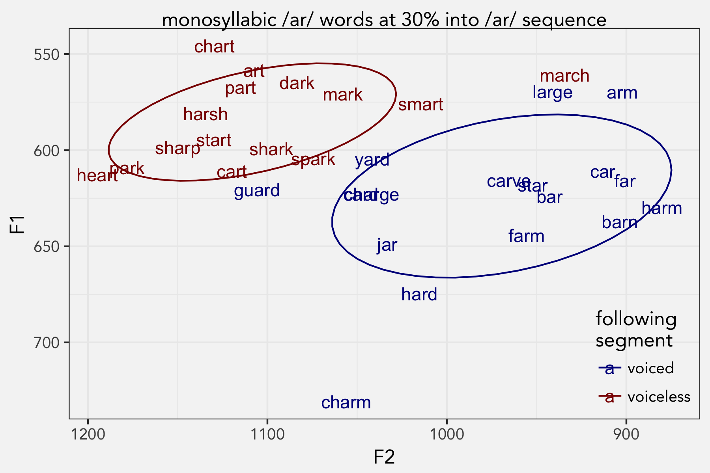
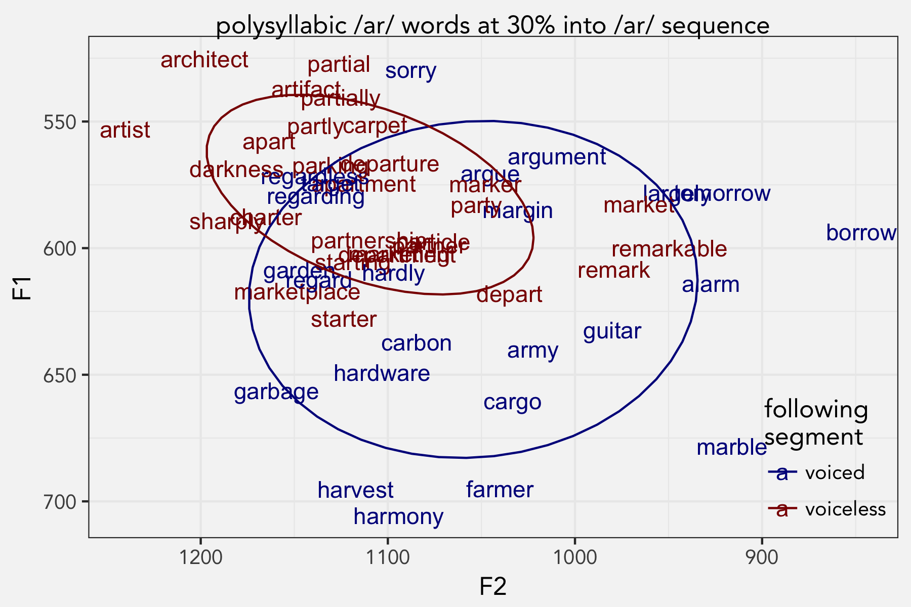
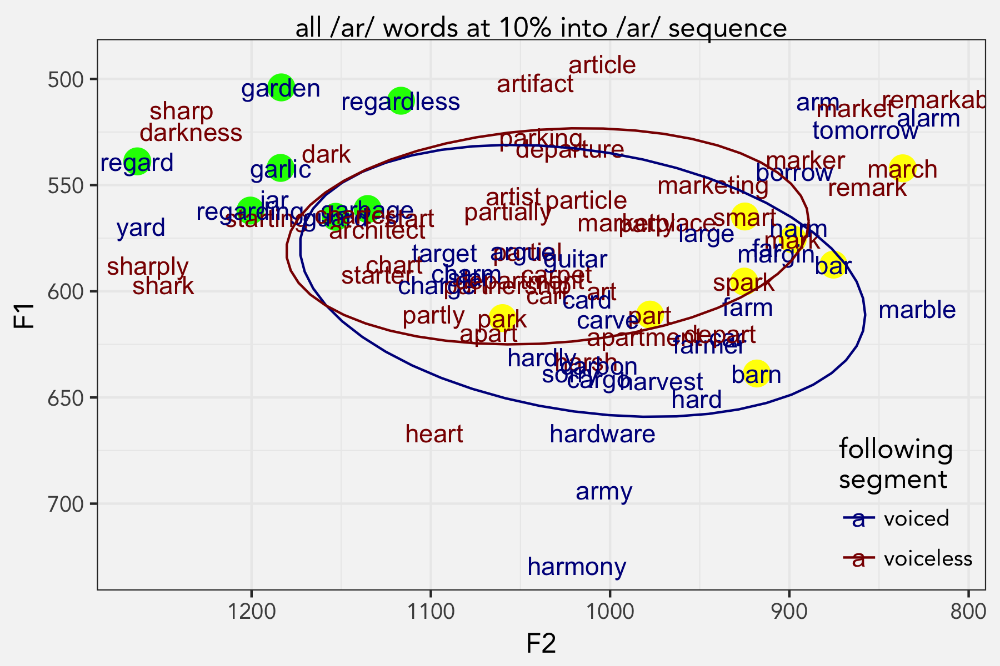
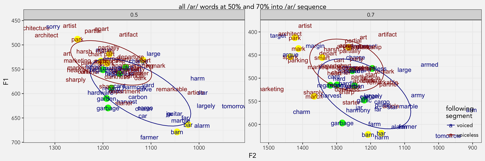
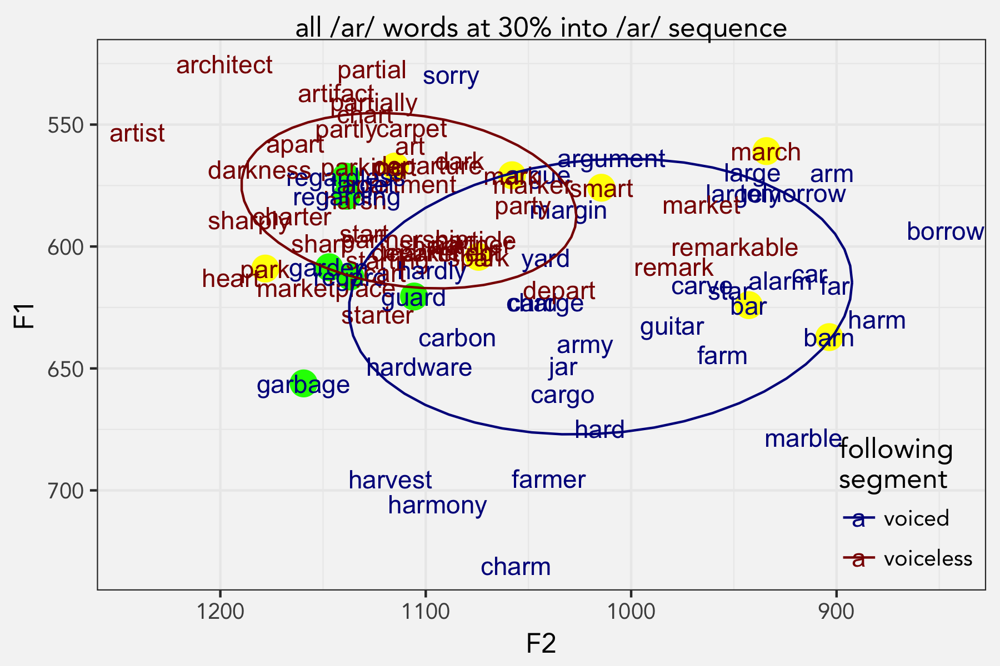

I’ve noticed for a while in my own speech that the vowel in star is higher and longer than start. I have American Raising, which, simplifying a bit, is where /aɪ/ is raised before voiceless consonants. So I just expected this to be another manifestation of that. I had some time so I thought I’d test this empirically. So here’s a breif study on my own speech to figure out what’s going on.
Hypothesis
/ɑr/ raises before voiceless segments.
Methods
In COCA’s list of the most frequent 5000 words, there are 88 that have the /ɑr/ sequence in stressed position. Here they are in order of frequency.
large, car, art, party, heart, article, artist, argue, hard, card, bar, yard, garden, partner, sorry, argument, department, apartment, farm, tomorrow, start, army, farmer, largely, hardly, smart, sharp, regarding, dark, far, mark, marketing, parking, darkness, armed, chart, remarkable, market, garlic, partly, partnership, regardless, target, carbon, borrow, margin, architect, park, architecture, march, harsh, particle, guitar, guard, alarm, starter, carve, starting, departure, sharply, hardware, garbage, cart, barn, carpet, star, jar, shark, charter, charge, partially, harm, artifact, partial, marketplace, part, harmony, remark, regard, arm, apart, marble, charm, marker, spark, harvest, depart, cargo
The words were randomized and I recorded myself reading them using Praat in a quiet place with a good mic. I segmented out the /ar/ sequence by hand (incidentally, I sounded like a seal: “ar ar ar ar”). Using a Praat script, I extracted formants at 30% of the way into the /ar/ sequence (what seemed to be about the midpoint of the vowel). Filtered out a few bad measurements. Analyzed in R. For this analysis, word-final /ar/ is being treated as pre-voiced.
Results
I’ll split my analysis up into monosyllabic words and polysyllabic words because the results were cleaner.
Monosyllabic words
The effect that place of articulation had on duration was clear. A simple boxplot shows the stark contrast.

With the exception of arm being short and mark being long, there’s a clear difference. In fact, the longest ones were mostly the word-final /ɑr/ words, but for this analysis I’ll group word-final and pre-voiced into one category.
Moving on to vowel quality, it’s clear that the voicing of the following segment has an effect. In fact, there’s virtually no overlap between the two vowel classes.

I ran a MANOVA test that took into account F1, F2, and duration, and the results show that the two groups are distinct.
summary(manova(cbind(F1, F2, dur) ~ fol_voice, data=ar))
Df Pillai approx F num Df den Df Pr(>F)
fol_voice 1 0.51552 28.375 3 80 1.348e-12 ***
Residuals 82 The p-value is small, which indicates the two are different, but I’ve noticed they tend to be on vowel data even for what seems like merged classes. More importantly, the Pillai score is pretty high: on a scale from 0 (=complete overlap) to 1 (completely separate), it’s about in the middle.
Out of curiosity, I did a k-means clustering analysis. I made it blind to phonetic environment so it finds the best two clusters based on F1 and F2 alone. As expected, the clusters essentially captured the voicing distinction, but there were a couple exceptions: march is voiced but clustered with the voiceless words, and both yard and guard are voiced but clustered with the voiceless words.
Conclusion so far: with the exception of a few words, it’s pretty clear that /ɑr/ is raised, fronted, and shorter before voiceless sounds.
Polysyllabic words
When there’s more than one syllable, things get complicated because of their distribution within the word. Most of the two-syllable words have word-initial stress, but there are a few misfits (alarm, depart, guitar, regard, remark). With three syllables stress is either on the first syllable (architect, argument, article, artifact, harmony, marketing, marketplace, partially, particle, partnership) or the second (apartment, department, departure, regarding, regardless, tomorrow). There were two four-syllable words, with the /ɑr/ segment on different syllables (architecture, remarkable). Most of these can be split up by the voicing of the following segment too, which spreads the data pretty thin.

Generally, the the raised variant occurs with voiceless segments, but this data is a little bit messier. What’s interesting is to look at the exceptions.
There were several pre-voiced segments that appeared to be raised: sorry, regardless, target (that one’s hard to see), regarding and maybe argue, argument, garden, and regard. I can’t help but notice that a lot of those words have the sequence /gɑr/. In fact, the only other /gɑr/ words were garlic and garbage, which were the most fronted voiced words even though they weren’t raised.
It’s interesting that guard was one of the few exceptions on the k-means clustering analysis on the monosyllabic words and was raised and fronted compared to the others. A part of me wants to think that /ɑr/ is raised after /g/, which would be cool.
It’s also worth noting that most of the voiceless words that were outside the ellipse were after bilabials: depart, market, remark, remarkable, etc. These are actually near the voiced segments after bilabials like borrow and tomorrow. This even explains why march was one of the exceptions detected by the k-means clustering analysis. Perhaps bilabials have something to do with backing.
Discussion
There is a phonetic explanation for the behavior of both the velars and the bilabials. Let’s talk about transition formants for a second. To start, the low vowel /ɑ/ has a high F1 and a low F2. Velars cause F1 to lower and F2 to raise (the latter as a part of the velar pinch), which is more like a higher, fronter vowel. Meanwhile, bilabials cause all formants to lower (because of the slight lengthening of the vocal tract), meaning raising and backing.
What’s happening is that some of these transition formants are raising the nucleus of the /gɑr/ sequence. The reason why we don’t see raising in /kɑr/ sequences such as car, carbon, cargo, carve, etc. is because of the extra padding of the aspiration. Transition formants do appear in aspiration and the fact that this VOT increases the time between the velar stop and the vowel gives my articulators time to transition to a full /ɑ/.
I don’t know of a good formal way to test this right now, but we can look at measurements at other points along the vowels’ durations and see if they’re predicted by the place of articulation. Moving closer to the vowel onset, the /gɑr/ words are even higher and fronter. And in fact, at 10% into the /ɑr/ sequence, the distribution is more easily predicted by the previous place of articulation.

Here, we see that the /gɑr/ sequences (highlighted in green now) are all very high and very front, together with /jɑr/ and /ʃɑr/ which have similar transition formant patterns. Similarly, the /ɑr/ words after bilabials (now in yellow) are somewhat backer, though this isn’t as stark. In fact the difference in voicing of the following stop is much smaller, and might not even be significant at all anymore.
If we measure later in time, the influence of the /r/ and its following consonant is increasing and the distinctions between the vowels also decreases.

Here we see that at halfway through the /ɑr/ sequence, the /gɑr/ words are still among the higher and fronter within the blue cloud. But at 70%, they are pretty much randomly dispersed among the other pre-voiced segments. The bilabials make it clear that the following place of articulation predicts this vowel plot: words like mark, park, and spark are higher and fronter due to the velar pinch.
Going back to that 30% point, which is roughly the middle of the vowel itself, here it is again, but with the highlights.

Here, the position of each word within the voiced/voiceless cloud is already being influenced by the surrounding consonants. Word that end in velars like mark, park, and spark are already fronting. Nearly all the /gɑr/ words are followed by an alveolar sound, which cause some raising and fronting but not as extreme as velars. So it makes sense that they would stay high but not as high as the pre-velars.
Conclusion
In my speech, I definitely have evidence to reject the null hypothesis and to conclude that /ar/ is raised before voiceless segments. I think that part is pretty clear.
I’ll admit, I came into writing this blog in hopes of showing that my /gɑr/ sequence is also raised. But after doing more tests, visualizations, and especially after taking into account the pattern of the bilabials, I just don’t have enough evidence to suggest it’s anything more than influence of surrounding consonants.
This makes me think hard about how to interpret vowel plots in the future. Every combination of surrounding consonants has its own trajectory, and it’s crazy that we can find patterns anywhere. This means ideally we should take into account more consonantal influences when interpreting vowel data. But at the same time that often spreads out data out way too thin since there will be only so a few tokens for any combination.
I’ve seen studies where they’ll put following place of articulation as a random effect in a mixed-effects model. In my opinion, that doesn’t seem methodologically sound because there’s a finite number of possible options, we generally know their effects, and any duplication study would mostly have the same places of articulation. Now, I’m reconsidering this, and I wonder if it might be a good idea to put a combination of previous and following consonant as a random factor (since they interact). While we probably know the effects of these interactions, any replication of the study might not have the same words and therefore might not have the exact same combinations of previous and following consonants. It’s quite common to go the extreme route and just put each word as a random effect since “every word has its own history.”
It’s also important to consider trajectory information more. As I showed above, just looking at one measurement can lead to erroneous claims, and we can get a more fuller picture by looking at the trajectory information. There are statistical methods out there that we can use for trajectories (SS-ANOVA, GAMMs, etc.) but I haven’t quite got the hang of them yet.
Well, I learned a few things by doing this quick study: surrounding consonants affect vowels and trajectories are important. Seems like old news, but it’s nice to have learned this for myself.